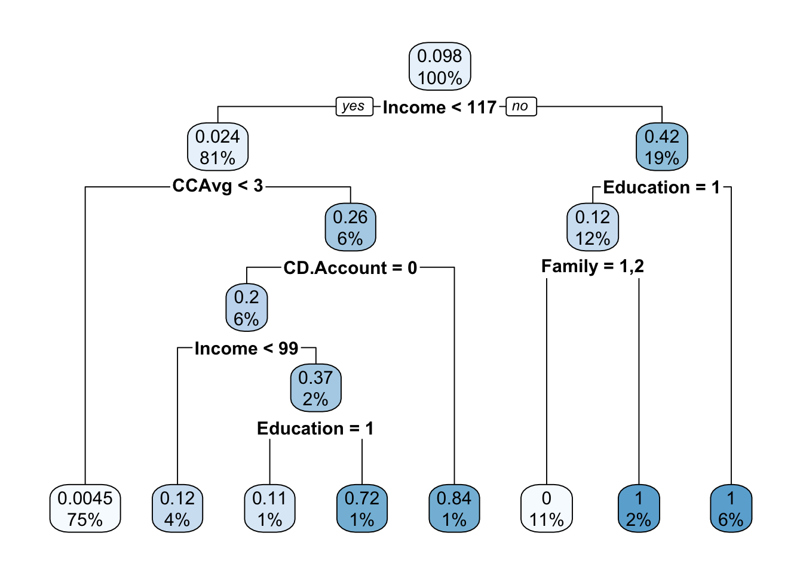
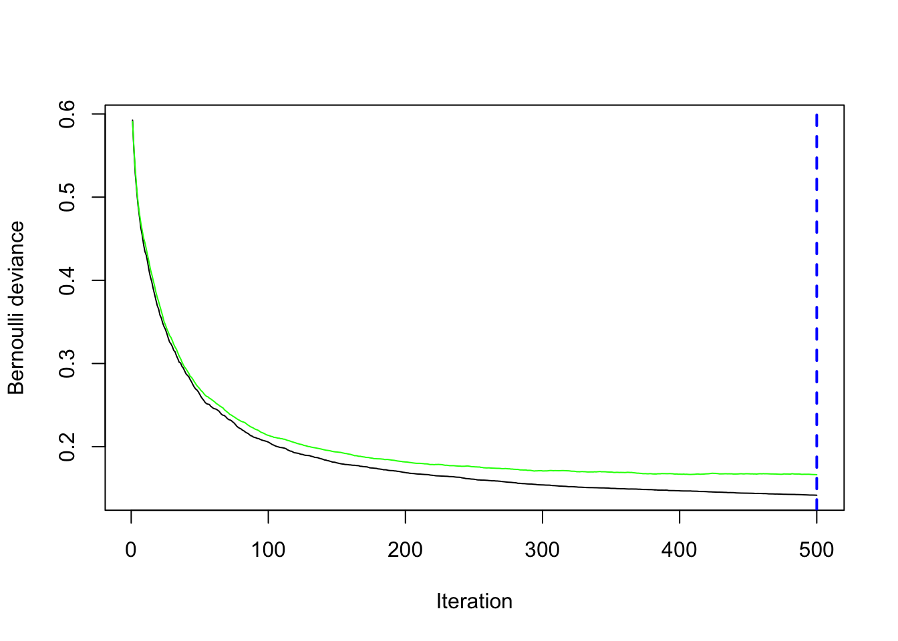

bank <- read.csv('UniversalBank.csv')
bank$Personal.Loan <- as.logical(bank$Personal.Loan)
bank$ID <- NULL
bank$ZIP.Code <- NULL
factor_columns = c("Family","Education","Securities.Account","CD.Account","Online","CreditCard")
bank[factor_columns] = lapply(bank[factor_columns], factor)Ensemble Methods: Ensemble Learning for Personal Loan Classification
Context
Let’s take a look at the data located in UniversalBank.csv. Each row represents a customer at small but rapidly growing bank. The columns measure all sorts of customer characteristics, ranging from their demographic information (e.g., Age, Family) to whether they currently have various accounts open with the bank (e.g., Securities Account, CD Account). For a complete description of the fields, consult the data page on Canvas.
The bank is aggressively trying to convert customers from depositors into borrowers through its personal loan program. The column Personal Loan shows whether each customer responded to a direct marketing campaign related to this program. The marketing team is now trying to understand what types of customers responds to new personal loans marketing. If they can establish reasonably strong predictive power, they will deploy the model more widely across their customer base to identify promising leads and a more nuanced target market.
Question 1
Do the following:
Import the data as “bank”
Remove any predictor that might be inappropriate for this activity.
Set the target to logical.
Question 2
Set a seed of 109 and partition a training set with 72% of the data.
Run a Classification Tree to predict Personal.Loan, make the predictions, and calculate the error rate. What is the error rate?
Answer: The error rate for classification tree is 0.01642857.
# Set a training and test set
set.seed(109)
N = nrow(bank)
trainingSize = round(N*0.72)
trainingCases = sample(N, trainingSize)
training = bank[trainingCases,]
test = bank[-trainingCases,]
# Run a single Classification Tree model and calculate its error rate
library(rpart)
model = rpart(Personal.Loan ~ ., data=training)
pred = predict(model, test)
pred = (pred > 0.5)
library(rpart.plot)
rpart.plot(model)
error_tree = sum(pred!=test$Personal.Loan)/nrow(test)
error_tree[1] 0.01642857Question 3
Bagging: Run a random forest model where you set the number of trees to 1000. Make the predictions and calculate the error rate. What is the error rate? Does this improve on the original single Classification Tree model?
Answer: The error rate of the random forest is 0.01214286. This error rate is less than the single classification tree error rate which was 0.01642857, thus suggesting the random forest model is better.
#install.packages("randomForest")
library(randomForest)randomForest 4.7-1.2Type rfNews() to see new features/changes/bug fixes.rf = randomForest(Personal.Loan ~ ., data= training, ntree=1000)Warning in randomForest.default(m, y, ...): The response has five or fewer
unique values. Are you sure you want to do regression?pred_rf = predict(rf, test)
pred_rf = (pred_rf > 0.5)
error_randomforest = sum(pred_rf!=test$Personal.Loan)/nrow(test)
error_randomforest[1] 0.01214286Question 4
Boosting: Set a new seed to 23 and run a boosted tree model with 500 trees and 5 folds. Determine the best tree size. What is this size? Then use this “best tree size” to run another boosted tree model.
Make the predictions and calculate the error rate. What is the error rate? If this error rate is wose than one or more of your previous models, what do you think might have happened?
Answer: The error rate of the boosted model is 0.02142857, which is a higher error rate than the previous models. This may suggest that the best size for the ntrees was not achieved and thus there was an increased error when tested. An evidence to this could be that the after running gbm.perf(boost), the best size remained the same.
training$Personal.Loan <- as.integer(training$Personal.Loan)
#install.packages("gbm")
library(gbm)Loaded gbm 2.2.2This version of gbm is no longer under development. Consider transitioning to gbm3, https://github.com/gbm-developers/gbm3set.seed(23) # we can set the seed to get optimal best_size for trees later, though it can vary greatly due to cross-validation without seed.
# We start with large amount of trees, but we can use cross-validation later to assess best number of trees
boost = gbm(Personal.Loan ~ ., data=training,n.trees=500, cv.folds=5)Distribution not specified, assuming bernoulli ...best_size <- gbm.perf(boost,method="cv")
gbm.perf(boost) #tells us the best number of models
[1] 500best_size[1] 500# Run the model again with best tree size
boost = gbm(Personal.Loan ~ ., data=training,n.trees=500, cv.folds=5)Distribution not specified, assuming bernoulli ...# Make predictions
pred_boost = predict(boost, test, n.trees=best_size, type="response")
pred_boost = (pred_boost > 0.5)
#calculate errors
error_boost = sum(pred_boost != test$Personal.Loan)/nrow(test)
error_boost[1] 0.02142857Question 5
- Now, run a logistic regression model to predict Personal.Loan. Refine the model using the step() function.
- Make the predictions. Use a cutoff of 0.5.
- Calculate the error rate. What is the error rate?
Answer: The error rate for the logistic regression was 0.035.
training$Personal.Loan <- as.logical(training$Personal.Loan)
set.seed(109)
traininglg <- bank[trainingCases,]
testlg <- bank[-trainingCases,]
modellg <- glm(Personal.Loan ~ ., data=traininglg, family=binomial)
summary(modellg)
Call:
glm(formula = Personal.Loan ~ ., family = binomial, data = traininglg)
Coefficients:
Estimate Std. Error z value Pr(>|z|)
(Intercept) -1.166e+01 2.189e+00 -5.326 1.00e-07 ***
Age -5.863e-02 8.100e-02 -0.724 0.469180
Experience 6.508e-02 8.053e-02 0.808 0.419017
Income 6.262e-02 3.668e-03 17.070 < 2e-16 ***
Family2 -1.572e-01 2.699e-01 -0.582 0.560231
Family3 2.164e+00 3.004e-01 7.204 5.84e-13 ***
Family4 1.621e+00 2.817e-01 5.755 8.67e-09 ***
CCAvg 2.478e-01 5.442e-02 4.554 5.26e-06 ***
Education2 4.025e+00 3.304e-01 12.184 < 2e-16 ***
Education3 4.327e+00 3.298e-01 13.120 < 2e-16 ***
Mortgage 4.824e-04 6.917e-04 0.697 0.485584
Securities.Account1 -1.076e+00 3.774e-01 -2.852 0.004347 **
CD.Account1 3.800e+00 4.207e-01 9.035 < 2e-16 ***
Online1 -6.734e-01 1.966e-01 -3.426 0.000613 ***
CreditCard1 -8.719e-01 2.510e-01 -3.473 0.000515 ***
---
Signif. codes: 0 '***' 0.001 '**' 0.01 '*' 0.05 '.' 0.1 ' ' 1
(Dispersion parameter for binomial family taken to be 1)
Null deviance: 2309.68 on 3599 degrees of freedom
Residual deviance: 833.04 on 3585 degrees of freedom
AIC: 863.04
Number of Fisher Scoring iterations: 8options(scipen=100)
modellg2 <- step(modellg)Start: AIC=863.04
Personal.Loan ~ Age + Experience + Income + Family + CCAvg +
Education + Mortgage + Securities.Account + CD.Account +
Online + CreditCard
Df Deviance AIC
- Mortgage 1 833.52 861.52
- Age 1 833.57 861.57
- Experience 1 833.71 861.71
<none> 833.04 863.04
- Securities.Account 1 842.31 870.31
- Online 1 844.92 872.92
- CreditCard 1 846.28 874.28
- CCAvg 1 854.64 882.64
- Family 3 924.16 948.16
- CD.Account 1 928.51 956.51
- Education 2 1141.71 1167.71
- Income 1 1410.40 1438.40
Step: AIC=861.52
Personal.Loan ~ Age + Experience + Income + Family + CCAvg +
Education + Securities.Account + CD.Account + Online + CreditCard
Df Deviance AIC
- Age 1 834.01 860.01
- Experience 1 834.14 860.14
<none> 833.52 861.52
- Securities.Account 1 842.81 868.81
- Online 1 845.41 871.41
- CreditCard 1 846.77 872.77
- CCAvg 1 854.67 880.67
- Family 3 924.52 946.52
- CD.Account 1 929.65 955.65
- Education 2 1141.90 1165.90
- Income 1 1427.91 1453.91
Step: AIC=860.01
Personal.Loan ~ Experience + Income + Family + CCAvg + Education +
Securities.Account + CD.Account + Online + CreditCard
Df Deviance AIC
- Experience 1 834.76 858.76
<none> 834.01 860.01
- Securities.Account 1 843.13 867.13
- Online 1 845.97 869.97
- CreditCard 1 847.18 871.18
- CCAvg 1 855.23 879.23
- Family 3 924.79 944.79
- CD.Account 1 930.45 954.45
- Education 2 1147.42 1169.42
- Income 1 1439.82 1463.82
Step: AIC=858.76
Personal.Loan ~ Income + Family + CCAvg + Education + Securities.Account +
CD.Account + Online + CreditCard
Df Deviance AIC
<none> 834.76 858.76
- Securities.Account 1 843.79 865.79
- Online 1 846.56 868.56
- CreditCard 1 847.84 869.84
- CCAvg 1 855.41 877.41
- Family 3 925.03 943.03
- CD.Account 1 931.89 953.89
- Education 2 1148.56 1168.56
- Income 1 1439.97 1461.97summary(modellg2)
Call:
glm(formula = Personal.Loan ~ Income + Family + CCAvg + Education +
Securities.Account + CD.Account + Online + CreditCard, family = binomial,
data = traininglg)
Coefficients:
Estimate Std. Error z value Pr(>|z|)
(Intercept) -12.98625 0.67686 -19.186 < 0.0000000000000002 ***
Income 0.06301 0.00364 17.308 < 0.0000000000000002 ***
Family2 -0.14642 0.26832 -0.546 0.585275
Family3 2.15893 0.30048 7.185 0.000000000000672 ***
Family4 1.61465 0.28104 5.745 0.000000009174662 ***
CCAvg 0.23927 0.05374 4.452 0.000008497064690 ***
Education2 4.01101 0.32918 12.185 < 0.0000000000000002 ***
Education3 4.27579 0.32516 13.150 < 0.0000000000000002 ***
Securities.Account1 -1.06193 0.37712 -2.816 0.004864 **
CD.Account1 3.83040 0.41944 9.132 < 0.0000000000000002 ***
Online1 -0.66921 0.19603 -3.414 0.000640 ***
CreditCard1 -0.86420 0.25021 -3.454 0.000552 ***
---
Signif. codes: 0 '***' 0.001 '**' 0.01 '*' 0.05 '.' 0.1 ' ' 1
(Dispersion parameter for binomial family taken to be 1)
Null deviance: 2309.68 on 3599 degrees of freedom
Residual deviance: 834.76 on 3588 degrees of freedom
AIC: 858.76
Number of Fisher Scoring iterations: 8# store probabilities. type=response (gives probabilities)
testlg$predictions <- predict(modellg2, testlg, type="response")
predictions <- testlg$predictions
#store TRUE/Falses
testlg$predictionsTF <- (testlg$predictions >= 0.5)
predictionsTF <- testlg$predictionsTF
# store observed values too
observations <-testlg$Personal.Loan
#Error Rate
error_ratelg <- sum(predictionsTF != observations)/nrow(testlg)
error_ratelg[1] 0.035Question 6
- Now, try to do stacking by combining the Random Forest model, the Boosted model, and the logistic regression model. What is your error rate?
Answer: The error rate of the the stacking model came out to be 0.01214286.
# First, get the predictions for all of data frame observations, not just test. Predictions made for entire dataframe.
pred_rf_full = predict(rf, bank)
pred_rf_full = (pred_rf_full > 0.5)
pred_boost_full = predict(boost, bank, n.trees=best_size, type="response")
pred_boost_full = (pred_boost_full > 0.5)
pred_log_full <- predict(modellg2, bank, type="response")
pred_log_full <- (pred_log_full > 0.5)
bank_stacked = cbind(bank,pred_boost_full, pred_rf_full, pred_log_full)
bank_stacked$Personal.Loan = as.logical(bank$Personal.Loan)
# Set the training and test data; now these sets have the predictions! thats why we have df_stacked
train_stacked = bank_stacked[trainingCases, ]
test_stacked = bank_stacked[-trainingCases, ]
# Run the stacked algorithm, where the manager/meta model is a logistic model.
stacked = glm(Personal.Loan ~ ., data = train_stacked, family=binomial)Warning: glm.fit: algorithm did not convergeWarning: glm.fit: fitted probabilities numerically 0 or 1 occurred# Make the predictions
pred_stacked = predict(stacked, test_stacked, type="response")
pred_stacked = (pred_stacked > 0.5)
# Calculate error rate
error_stacked = sum(pred_stacked != test$Personal.Loan)/nrow(test)
error_stacked[1] 0.01214286Question 7
Which ensemble method lowered the error the most?
Answer:The random forest and stacked model had the same least error rate considering the models we ran within this workbook, with the error rate being 0.01214286.